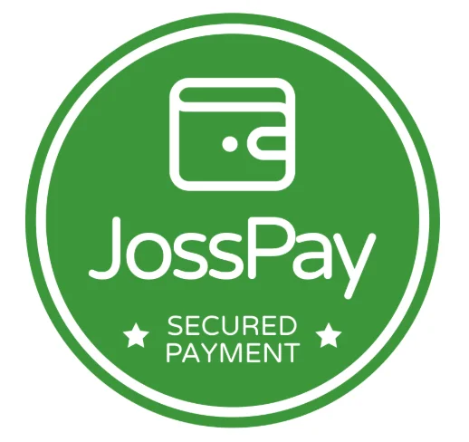
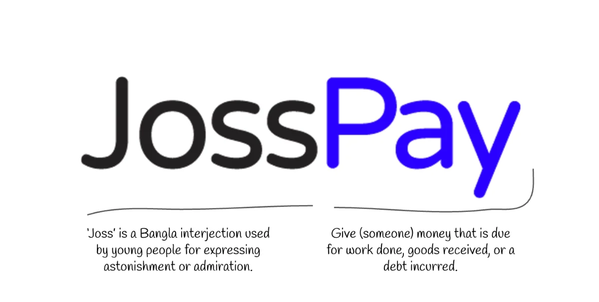
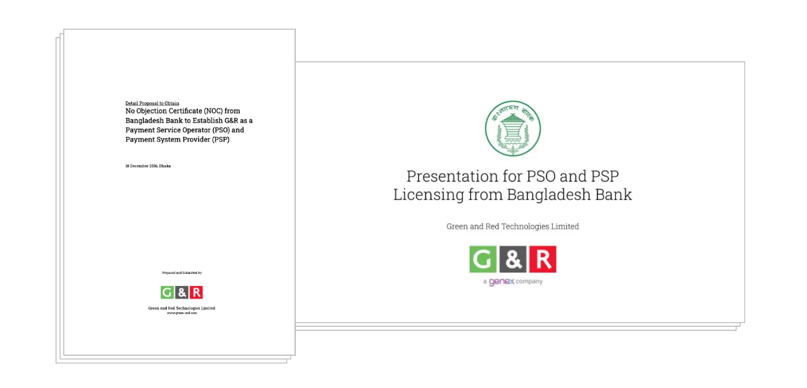
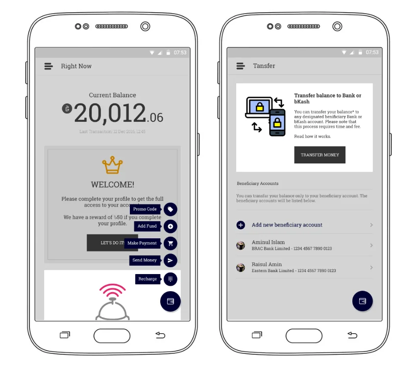

JossPay is the project I have the most complicated feelings about. It was a wallet product built inside G&R, using a Payment System Provider (PSP) license issued by Bangladesh Bank, the country's financial regulatory authority. I'm telling it separately from the main G&R story because it deserves its own arc, its own lessons, distinct from the ad network that carried the company.

The JossPay logo mark.
It started as an internal necessity, not a product idea. Back in 2014, G&R needed a way to handle transactions with advertisers, publishers, and agency partners. That meant building real financial infrastructure: calculating transactions in real time, catching fraudulent activity, connecting to multiple payment sources. Once that groundwork existed, an idea followed naturally. If we already had the technology to move money reliably, why not build something bigger with it. JossPay was meant to be Bangladesh's version of PayPal.
The name wasn't arbitrary. It drew on a Bangla word with a double meaning, chosen to feel local, warm, and a little bit proud.

The thinking behind JossPay's name and identity.
In 2014, digital payment was still a genuinely hard problem for anyone doing internet business in Bangladesh. For an ad technology company specifically, it was harder still, since budgets had to be calculated against every single ad request in real time.
Multiple banks offered payment gateway solutions, but regulatory authority had imposed strict law against unauthorized transactions. Getting formal approval wasn't optional, it was mandatory before any fintech product could exist. Still, the need was real. The internet in Bangladesh was booming, and there was no local, trusted answer to the question of how to move money as easily as PayPal did elsewhere.
From inception to beta, we spent around two years building this product while navigating every regulatory requirement along the way.
Part of my role was running the regulatory groundwork with Bangladesh Bank: reviewing what they required and getting a working version of the app in front of them to review, not just a pitch deck, but a real product they could test.

Documentation prepared for Bangladesh Bank's regulatory review.
The rest was a team effort: brand identity, the internal dashboard, and the product design across Android and iOS.

The JossPay Android app: balance, transfers, circles, and account screens.
It took two full years just to get the initial NOC (No Objection Certificate) that would let the app go public. By the time that approval finally came through, the market had already moved. Competing products were live and fighting to prove their own business models, and Mobile Financial Services (MFS) was rising fast, an already-established, trusted category that made it much harder to see any real future for a wallet built the way JossPay was.
We had built something genuinely functional, with real regulatory rigor behind it. But two years is a long time in a market moving that fast, and by the time we were allowed to launch, the moment that made JossPay necessary had largely passed.
The license didn't die with the delay, though. It's still active today, running as ST Pay inside ShareTrip, one of Bangladesh's largest travel commerce platforms. I wasn't there to see it get there, but what the team and I spent two years building is still doing exactly what it was built to do, just not under our watch, and not under the name we gave it.
"I didn't see it succeed. That doesn't mean it didn't."
JossPay taught me something the successful projects never could, that being right about a need and being fast enough to meet it are two completely different problems. We understood exactly what Bangladesh needed. We built it carefully, correctly, and with real integrity toward the regulatory process. I didn't get to see it succeed on my own terms, timing cost us that.